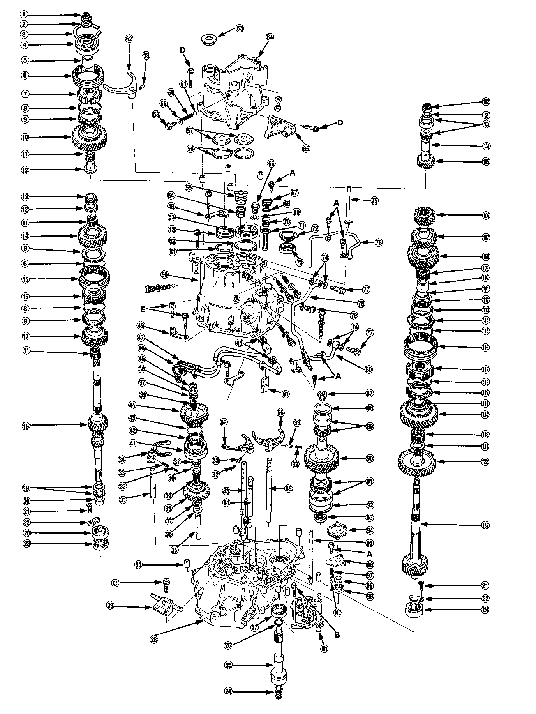
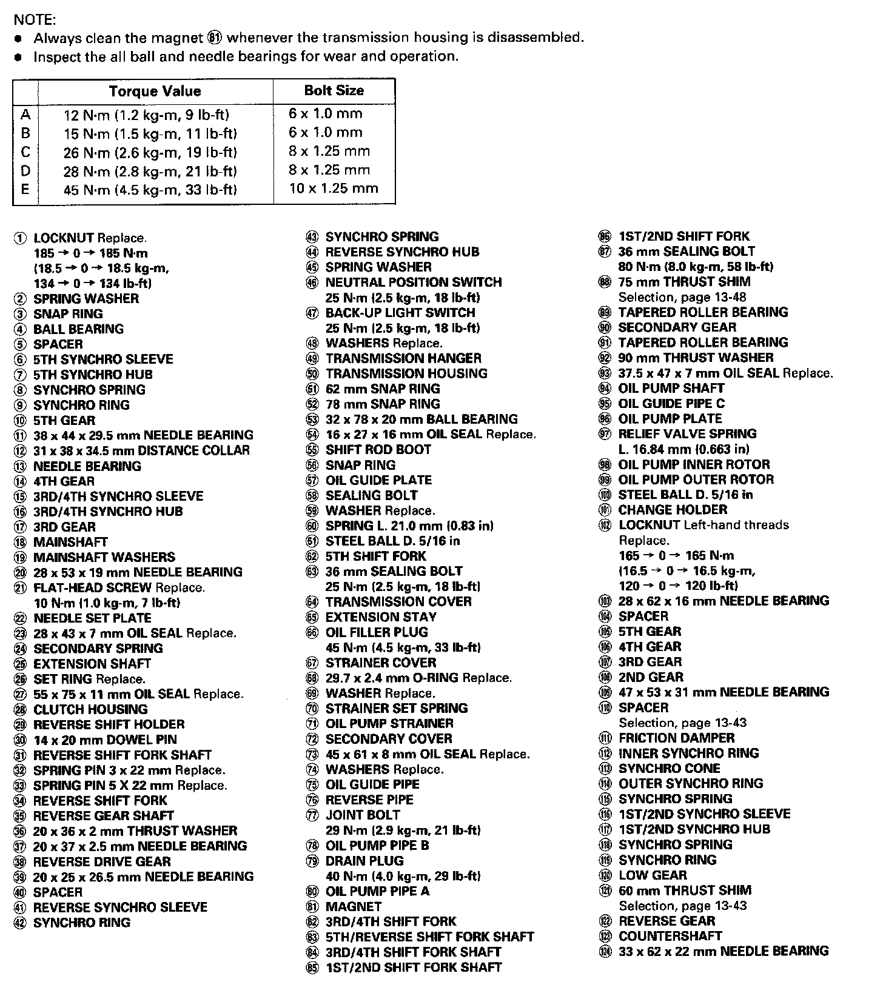

Operation CHARM
: Car repair manuals for everyone.
Home
>>
Acura
>>
1991
>>
Legend Sedan V6-3206cc 3.2L SOHC FI
>>
Repair and Diagnosis
>>
Diagrams
>>
Exploded Views
>>
Manual Transmission/Transaxle
Manual Transmission/Transaxle

Transaxle Exploded View

Part Index